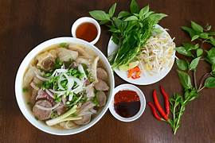
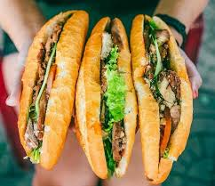

Famous Dishes
- Pho - Traditional Vietnamese noodle soup.
- Banh Mi - Vietnamese sandwich with various fillings.
- Spring Rolls - Fresh or fried rolls with shrimp, pork, and vegetables.

Read more about Pho on this site.

Read more about Banh my on this site.